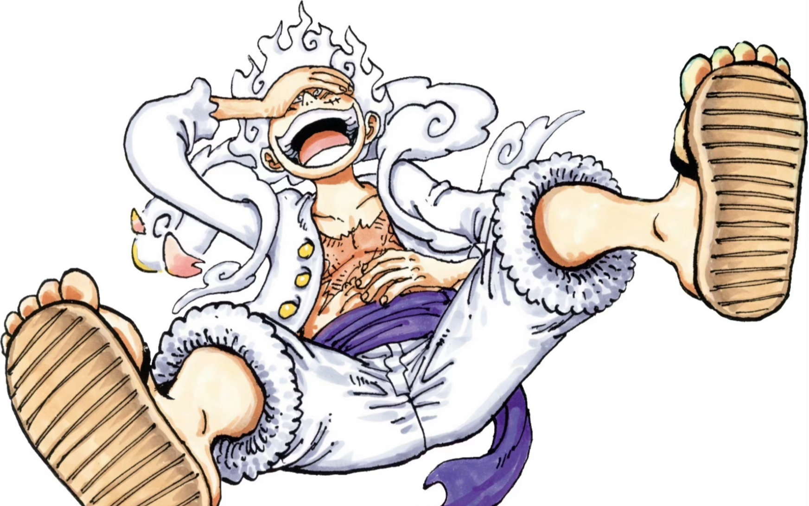
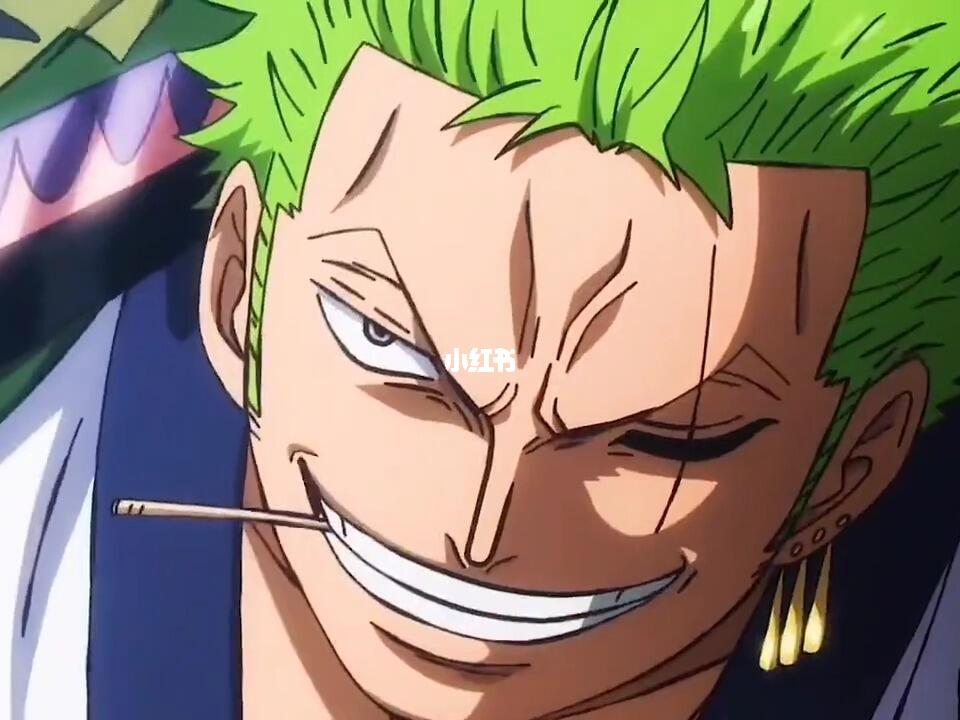
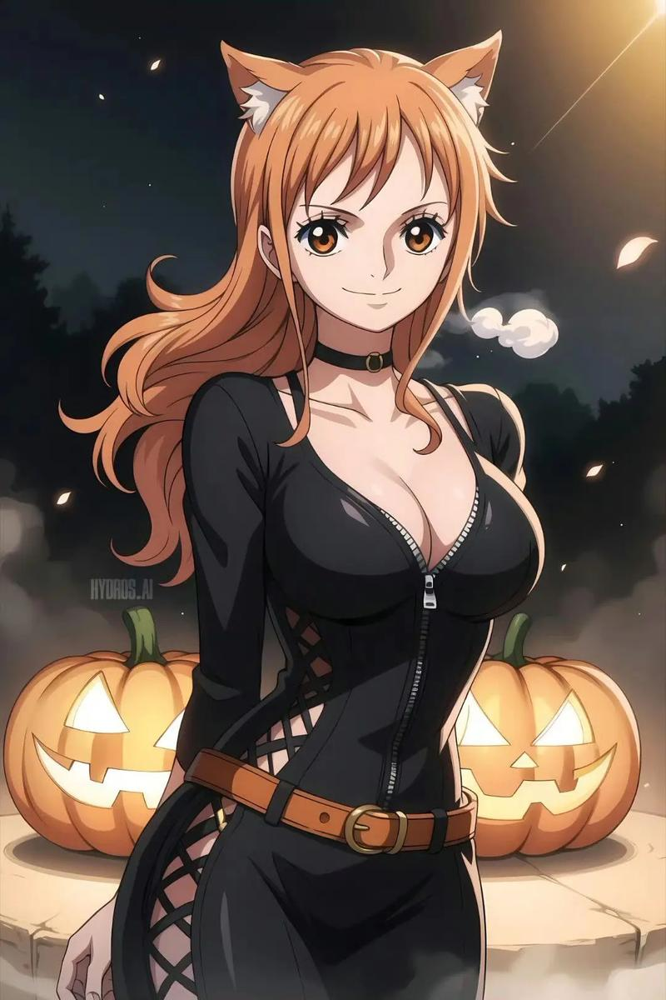
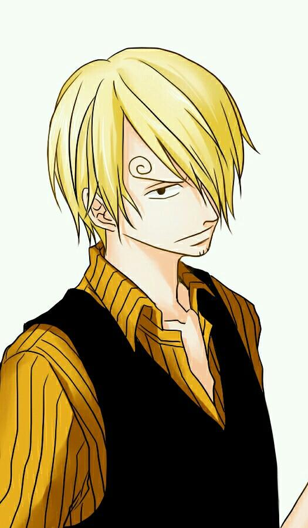

蒙奇·D·路飞
蒙奇·D·路飞，是海贼王中的主人公，草帽海贼团的船长。他的目标是找到传说中的One Piece，成为海贼王。
罗罗诺亚·索隆
罗罗诺亚·索隆，是草帽海贼团的剑士，被誉为“世界第一剑豪”。他的目标是成为世界最强的剑士。
娜美
娜美，是草帽海贼团的导航员和航海士，擅长绘制航海图和天气预报。她的梦想是绘制出世界上最完美的航海图。
山治
山治，是草帽海贼团的厨师，擅长料理和踢击术。他的梦想是找到All Blue，成为世界最伟大的厨师。
蒙奇·D·路飞，是海贼王中的主人公，草帽海贼团的船长。他的目标是找到传说中的One Piece，成为海贼王。
罗罗诺亚·索隆，是草帽海贼团的剑士，被誉为“世界第一剑豪”。他的目标是成为世界最强的剑士。
娜美，是草帽海贼团的导航员和航海士，擅长绘制航海图和天气预报。她的梦想是绘制出世界上最完美的航海图。
山治，是草帽海贼团的厨师，擅长料理和踢击术。他的梦想是找到All Blue，成为世界最伟大的厨师。